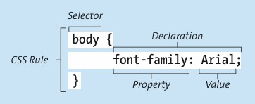
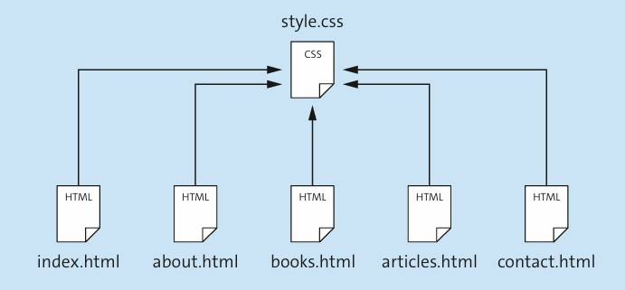
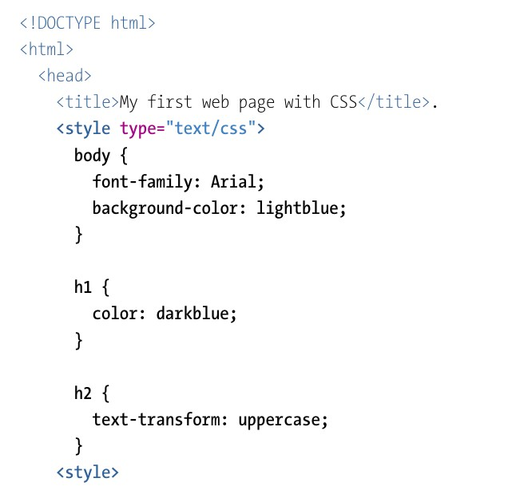

O CSS (Cascading Style Sheets) é uma linguagem usada para definir a aparência visual de páginas web.O seletor CSS permite especificar quais elementos HTML devem ser submetidos à respectiva regra CSS. Você pode usar a declaração CSS escrita em chaves para especificar exatamente como esses elementos HTML devem ser mostrados. As declaracoes sao compostas em uma propriedade CSS e um valor CSS, sao separados por ":" e terminam juntos com ";". As propriedades podem alterar a cor, fonte, dimensões ou cor da borda de um elemento. É possível especificar a cor, fonte, largura ou altura deve ser selecionada.
As declarações, sao uma propriedade Css e um valor css

Existem três maneiras de incluir o CSS no HTML
(CSS externo):salva as instruções de CSS como um arquivo CSS separado (com extensão .css) e inclui esse arquivo no documento HTML
(CSS interno):define as instruções de CSS no cabeçalho do documento HTML dentro do elemento "style".
(CSS inline):especifica as instruções de CSS diretamente em um elemento HTML.
A inclusão de arquivos CSS separados (CSS externo) é mais usado, porque o código HTML é separado do CSS. Dessa maneira, garante que cada documento HTML use as mesmas intruções do CSS e que cada pagina web tenha uma apresentação mais organizada. Essa estrutura tambem permite que ao fazer alterações de estilo, só é preciso fazer uma vez de forma centralizada, nos arquivos CSS, onde vai mudar em todos os documentos HTML.

Também é possível definir regras CSS diretamente dentro de um documento HTML (CSS interno). Quando o CSS é incluido dentro do HTML, não é possível reutilizar o código CSS em outros documentos, a não ser que seja copiado manualmente.Para definir regras CSS diretamente em um documento HTML, você pode simplesmente escrevê-las como texto no elemento "style", que geralmente está localizado no elemento "head" da página web.

O CSS pode ser definido diretamente em um único elemento HTML, basta definir as declarações CSS apropriadas dentro do atributo style do elemento HTML. (CSS inline)
Para selecionar quais elementos HTML são modificados por uma regra CSS, pode-se usar diferentes tipos de seletores. Pode selecionar elementos pelo nome da tag, pelo atributo id, por classes CSS, por atributos e pela hierarquia na qual um elemento se encontra
Os seletores são usados para especificar a quais elementos uma regra CSS deve ser aplicada. A palavra "cascata" refere-se a uma cachoeira que cai por vários degraus. Em termos de CSS, o princípio da cascata ajuda a definir regras CSS. Assim, regras mais gerais podem ser definidas que se aplicam a muitos elementos (que são assim organizados em um nível superior na "cascata" e "alcançam" vários elementos), assim como regras mais específicas que se aplicam a alguns ou até mesmo a um único elemento (e que são organizadas em um nível inferior nos selecionadores filhos Seleciona elementos que são elementos filhos diretos do outro elemento definido no seletor. Corpo " ul { cor: verde; } O corpo "seletor ul seleciona todas as listas não ordenadas ("ul"elementos) que ocorrem diretamente abaixo do "body" elemento. Listas aninhadas, portanto, não seriam afetadas por esse seletor. Seletores descendentes Selecionam elementos que são descendentes dos outros elementos definidos no seletor (mas não necessariamente elementos filhos diretos). Corpo ul { cor: green; } O seletor corpo ul seleciona todas as listas não ordenadas ("ul"elementos) que ocorrem abaixo do "body" elemento, incluindo listas aninhadas.
O cálculo da especificidade de um seletor é baseado em três contadores (A, B e C). O contador A é incrementado em 1 para cada seletor de ID, o contador B é incrementado em 1 para cada ocorrência de um seletor de atributo ou classe ou pseudo-classe (veja a caixa), e finalmente o contador C é incrementado em 1 para cada ocorrência de um seletor de tipo ou pseudo-elemento (veja a caixa). Seletores diferentes dos mencionados, como o seletor universal, não são considerados ao calcular a especificidade. Vamos ver alguns exemplos em que os seletores se tornam mais específicos de cima para baixo.
Os valores definidos por meio das regras CSS são herdados pelos elementos filhos. Por exemplo, se foi especificada uma cor (color) e uma fonte (font-family) para um elemento, todos os elementos dentro dele também serão estilizados com essa cor e fonte, a menos que outros valores de cor e fonte tenham sido aplicados diretamente a eles (por exemplo, por meio de outras regras CSS). Já outras propriedades, como bordas (border), não são herdadas.
Valores RGB
Usam a combinação de vermelho, verde e azul, cada um entre 0 e 255.
Exemplo: rgb(255,255,0): amarelo.
Valores Hexadecimais
Representados por 6 dígitos hexadecimais (2 para cada componente).
Exemplo: #FFFF00 → amarelo.
Existe também a notação curta: #FF0 → #FFFF00.
Nomes de cores
Mais de 140 nomes pré-definidos, como yellow, deeppink, lavenderblush.
Valores RGBA
Versão do RGB com valor alfa (0.0–1.0) para transparência.
Exemplo: rgba(255,255,0,0.5) → amarelo semitransparente.
Valores HSL
Definidos por matiz (0°–360°), saturação (%) e luminosidade (%).
Exemplo: hsl(60,100%,50%) → amarelo.
Valores HSLA
Versão do HSL com valor alfa para transparência.
Exemplo: hsla(60,100%,50%,0.5) → amarelo semitransparente.
Listas e Tabelas Componentes como listas e tabelas também podem ser personalizadas usando CSS.
No caso das listas, pode personalizar principalmente os marcadores das entradas individuais da lista. A propriedade list-style-type deve ser usada para especificar sua aparência.
são listas em que as entradas individuais não são classificadas. Por padrão, cada entrada da lista é precedida por um ponto preto como marcador. Para essa lista, é necessário escolher os seguintes valores para a propriedade list-style-type: none: Nenhum marcador é usado. disc: O marcador é um círculo preto. circle: O marcador é um círculo branco com uma borda preta. square: O caráter de marcador é um quadrado preto.
são listas onde os itens individuais da lista são organizados de alguma forma. Para este tipo de lista, para manipular a aparência das marcas e, assim, a aparência da ordenação, você pode usar os seguintes valores para a propriedade list-style-type (entre outros): decimal: Enumeração em números decimais (1, 2, 3, ...) decimal-leading-zero: Enumeração em números decimais precedida por 0 para números de 1 dígito (01, 02, 03, ... 09, 10, 11, ...) lower-alpha: Enumeração em letras minúsculas do alfabeto (a, b, c, ...) upper-alpha: Enumeração em letras maiúsculas do alfabeto (A, B, C, ...) lower-roman: Enumeração em números romanos, representados por letras minúsculas (i, ii, iii, ...) upper-roman: Enumeração em números romanos, representados por letras maiúsculas (I, II, III, ...)
Além de configurar os marcadores através da propriedade list-style-type, para listas não ordenadas, também tem a opção de definir um gráfico a ser usado como marcador.
Pode-se usar a propriedade list-style-position para personalizar a posição dos marcadores. O outside garante que os marcadores fiquem à esquerda do bloco de texto, o que também é o padrão se a posição não for controlada via CSS. O valor inside, por outro lado, garante que os marcadores fiquem recuados dentro do bloco de texto (esse valor funciona tanto para listas não ordenadas quanto para ordenadas).
border: A propriedade border é usada para desenhar bordas, neste caso, para desenhar a borda de toda a tabela. Esta propriedade permite especificar a largura da borda (fina, mas especificações em pixels também são permitidas), o estilo (sólido) e a cor (#000000). border-collapse:“colapsar” essas bordas (valor collapse), ou seja, para que as células individuais “compartilhem” uma borda. padding:definir quanto espaço deve existir entre o conteúdo de uma célula e sua borda. Essa propriedade permite que você torne a tabela mais “arejada” e menos compacta do que o padrão. Pseudo-classe :first-child:pode selecionar o primeiro elemento filho de um determinado tipo de elemento. Por exemplo, o seletor td:first-child seleciona todos os primeiros elementos "td" filhos, ou seja, todas as células na primeira coluna. pseudo-classe :nth-child(): pode selecionar elementos filhos que estão localizados em uma posição específica dentro do elemento pai (a posição é passada como parâmetro
É possivel posicionar elementos HTML de forma precisa em uma página da web e, assim, influenciar o layout da página.
O HTML distingue entre elementos de nível de bloco e elementos de nível inline. Elementos de nível de bloco são sempre exibidos pelo navegador em uma nova linha, enquanto elementos de nível inline são exibidos onde aparecem no fluxo do texto. Com a propriedade CSS display, você pode personalizar o comportamento dos elementos em relação ao fluxo do texto: o valor block garante que o elemento seja considerado um elemento de nível de bloco; o valor inline garante, portanto, que o elemento seja considerado um elemento de nível inline.
Posicionamento estático (valor estático): Nesse caso, os elementos são posicionados conforme aparecem no código HTML (no “fluxo normal”). Posicionamento relativo (valor relativo): Nesse caso, os elementos são posicionados relativamente para cima, para a direita, para baixo ou para a esquerda com base em sua posição no fluxo normal. Posicionamento absoluto (valor absoluto): Nesse caso, os elementos são retirados do fluxo normal e posicionados em relação ao elemento pai. Posicionamento fixo (valor fixo): Nesse caso, os elementos são posicionados em relação à janela do navegador (também chamada de viewport). Posicionamento sticky (valor sticky): Nesse caso, os elementos se comportam de forma semelhante ao posicionamento fixo em termos de posicionamento, mas rolam apenas até um ponto especificado e então permanecem fixos na viewport. Posicionamento herdado (valor inherit): Nesse caso, o comportamento de posicionamento é herdado do elemento pai.
A propriedade CSS correspondente float pode ser usada para definir elementos para o lado esquerdo ou direito do bloco HTML ao redor, como mostrado na Figura 3.16. Por muito tempo, o layout float foi a arma escolhida para organizar elementos.
Por padrão, os formulários têm uma aparência pouco organizada, porque elementos como `label`, `input` e `button` são inline e seguem o fluxo normal do texto. Para melhorar o layout, pode-se usar a propriedade CSS `float`, alinhando elementos à esquerda ou à direita dentro do `form`. A propriedade `overflow` no formulário ajuda a ajustar corretamente sua altura para conter todos os elementos flutuantes. Outras propriedades CSS, como cor de fundo, bordas arredondadas e alinhamento de texto, melhoram a aparência visual. Já `width` e `max-width` são importantes para definir tamanhos adequados do formulário, rótulos e campos de texto, deixando o formulário mais organizado e legível.
O Flexbox Layout, introduzido no CSS3, é mais flexível que o layout com `float` ou os layouts tradicionais de elementos em bloco e inline. Sua principal função é ajustar automaticamente a largura e a altura dos elementos filhos para ocupar melhor o espaço disponível. O contêiner flex pode aumentar ou diminuir os itens internos para evitar espaços vazios ou problemas de overflow. Diferente dos layouts tradicionais, o Flexbox é independente de direção, permitindo organizar elementos tanto horizontalmente quanto verticalmente de forma mais prática e adaptável.
No exemplo de formulário com Flexbox, cada rótulo (`label`) e campo de texto (`input`) é colocado dentro de elementos `div`. Esses `div` recebem `display: flex`, tornando-se contêineres flexíveis. A propriedade `flex` define o espaço ocupado pelos elementos: os campos de texto recebem valor `2`, ficando com o dobro da largura dos rótulos, que recebem valor `1`. Já a propriedade `justify-content: flex-end` organiza os elementos no final do contêiner, alinhando-os à direita.Com isso, o formulário fica mais organizado, alinhado e adaptável.
O Grid Layout é mais indicado para layouts complexos do que o Flexbox. Enquanto o Flexbox trabalha em apenas uma dimensão (linha ou coluna), o Grid funciona em duas dimensões, permitindo organizar elementos em linhas e colunas dentro de um contêiner. Os elementos, chamados de grid items, são posicionados em uma grade (*grid*), facilitando a criação de layouts mais organizados e complexos de forma prática e eficiente.
No exemplo de formulário com Grid Layout, o elemento `